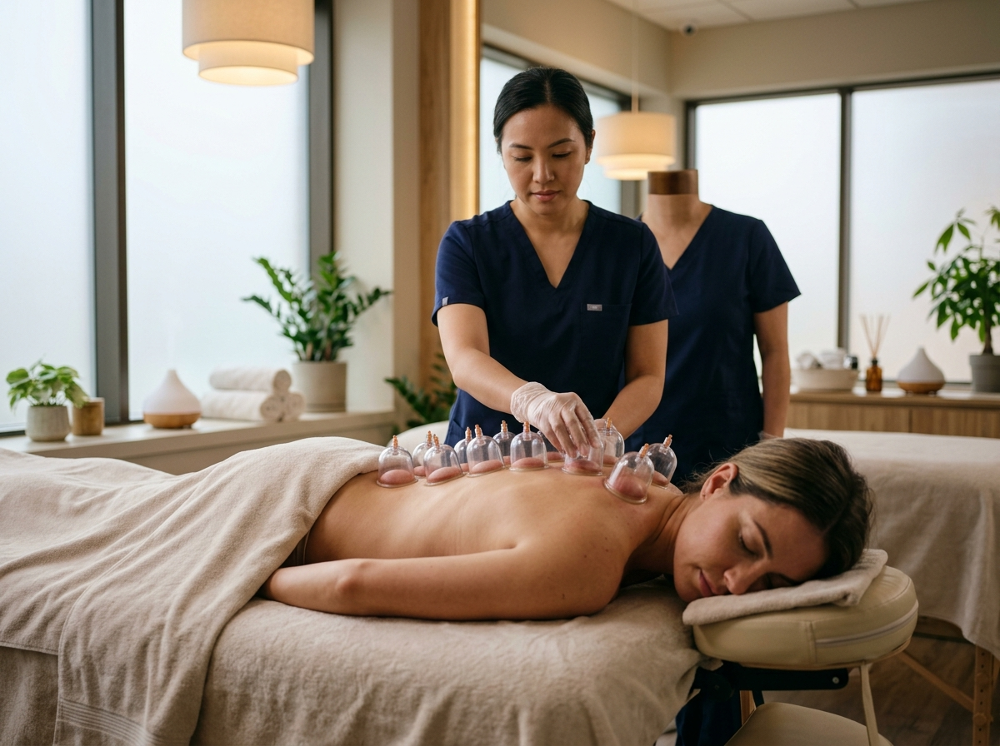
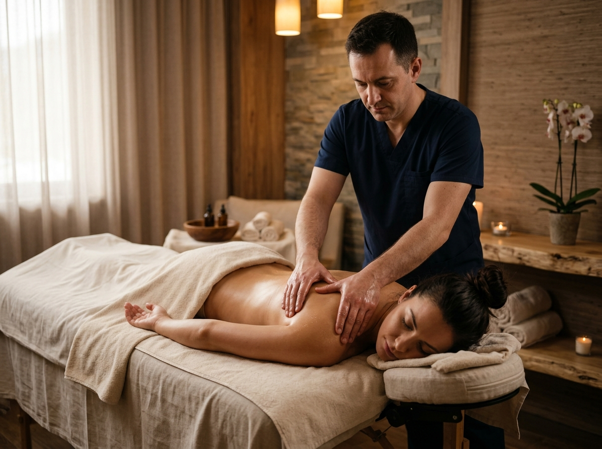
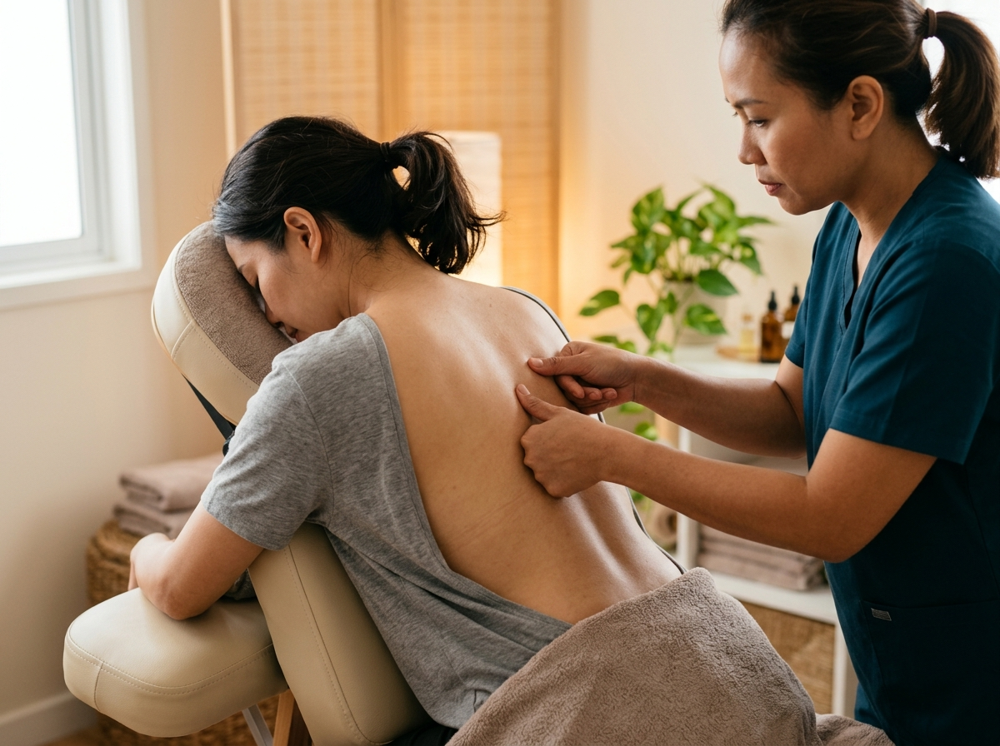
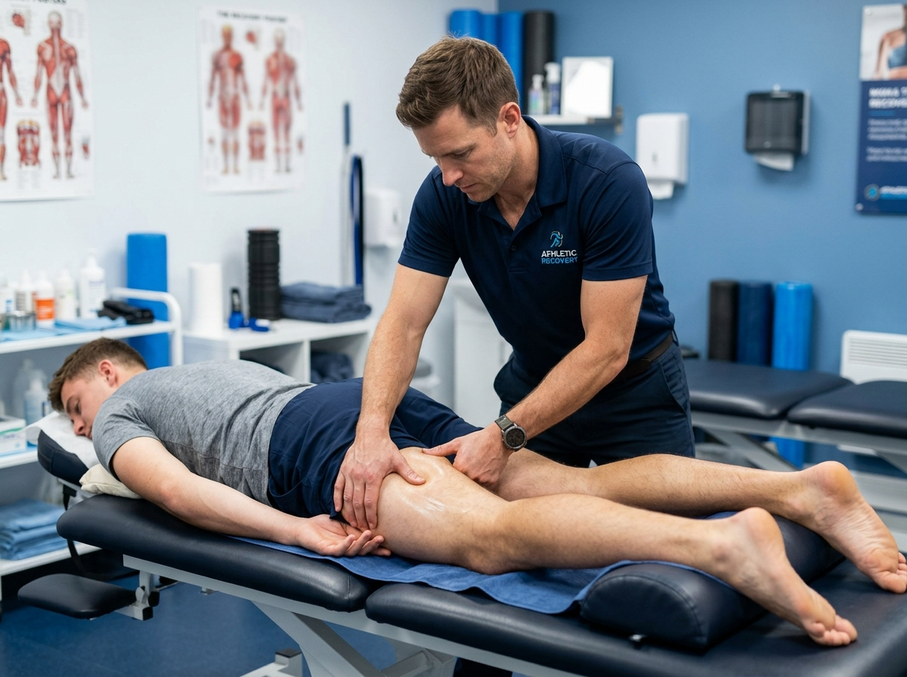

Terapi Kesehatan Tradisional
Rasakan manfaat terapi bekam dan pijat profesional untuk memulihkan kesehatan tubuh Anda secara alami. Ditangani oleh tenaga ahli berpengalaman.
Tentang Kami
Kami menggunakan metode terapi tradisional yang telah terbukti secara turun-temurun untuk membantu memulihkan kesehatan tubuh secara alami.
Ditangani oleh praktisi berpengalaman yang memahami titik-titik terapi tubuh untuk hasil yang optimal dan aman.
Kami mengutamakan kenyamanan dan keamanan setiap pasien dengan peralatan steril dan lingkungan yang bersih.
Layanan Kami

Terapi bekam (hijamah) untuk mengeluarkan darah kotor dan toksin dari dalam tubuh, melancarkan peredaran darah, meredakan nyeri otot, dan meningkatkan sistem kekebalan tubuh secara alami.
Reservasi
Pijat profesional dengan teknik khusus untuk menghilangkan pegal, mengurangi stres, merelaksasi otot-otot yang tegang, serta memberikan efek relaksasi mendalam untuk tubuh dan pikiran Anda.
Reservasi
Terapi totok punggung menggunakan teknik penekanan jari-jari tangan dengan cara menekan, mengoyangkan, dan mengetarkan untuk memberikan stimulan (penotokan) di titik penyumbatan. Membantu mengatasi berbagai keluhan seperti stroke, jantung, paru-paru, asma, ginjal, hipertensi, diabetes, migrain, vertigo, dan lainnya.
Reservasi
Perawatan profesional untuk membantu meredakan nyeri otot, mempercepat pemulihan, dan meningkatkan performa tubuh. Menangani berbagai keluhan dan cidra otot seperti sakit bahu, frozen shoulder, sakit pinggang, saraf kejepit, cidra lutut, cidra engkel, dan lainnya. Bebas nyeri, gerak maksimal!
ReservasiMengapa Memilih Kami
Terapi bekam dan pijat memiliki banyak manfaat untuk kesehatan tubuh Anda, baik secara fisik maupun mental.
Membantu mengoptimalkan aliran darah ke seluruh tubuh
Meredakan ketegangan otot dan mengurangi rasa nyeri
Membantu proses detoksifikasi alami dalam tubuh
Memperkuat sistem kekebalan tubuh secara alami
Memberikan efek relaksasi mendalam dan mengurangi stres
Hubungi Kami
Jl. KH Muhasim V RT 08 RW 06
Cilandak Barat, Jakarta Selatan